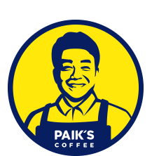
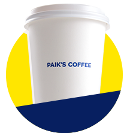
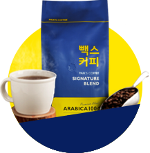

비주얼영역
빽다방
합리적인 가격, 놀라운 퀄리티의 커피전문점 "빽다방"입니다.
합리적인 가격, 놀라운 퀄리티의 커피전문점 "빽다방"입니다.

싸다!
크다!
맛있다!
고객분들이 흔히 하는 오해 중 하나가 바로 “저렴한 커피는 퀄리티도 낮다” 입니다.
커피의 가격과 퀄리티의 연관성은 당연할 수 있지만, 빽다방은 그 선입견을 깨고자 노력하고 있습니다.
빽다방 원두는 브라질 스페셜티 원두를 함께 블렌딩하여 사용하는데, 수확한지 1년 미만 된 아라비카 뉴크롭 생두를 생산국 정부의 수확 시기, 품질, 크기 등 엄격한 기준을 토대로 선별하여 수입합니다.
이 까다로운 조건을 통과하여 수입된 원두는 최상의 공간에서 최적의 배전도로 로스팅 되고, 로스팅이 완료된 원두는 신선도 유지를 위해 2일 내로 전국 가맹점에 빠르게 배송되며, 매장에서는 로스팅 완료 후 2주 내에 사용할 수 있게끔 엄격한 시스템이 운영되고 있습니다.
이렇게 만들어지는 빽다방 원두는 브라질 원두 고유의 묵직한 바디감과 아몬드의 고소함, 밀크초콜릿 같은 은은한 단맛이 강점입니다.

빽다방의 모든 라떼에는 바리스타와 밀크마스터가 공동으로 개발한 “바리스타즈밀크”를 사용하여 더욱 고소하고 깊은 풍미를 맛보실 수 있습니다.
생크림 또한 100% 국내산 동물성 생크림을 사용하여 깊은 맛을 더하며 이러한 유제품은 체계적인 물류 시스템을 통해 매일 신선한 상품으로 가맹점에 배송됩니다.
이 외에도 달콤 쌉싸름한 맛이 일품인 벨기에산 컬스 초콜릿, 녹차의 향을 진하게 느낄 수 있는 100% 국내산 녹차 파우더, 완전주스 시리즈에 이용되는 과일인 100% 국내산 수박, 배, 딸기 등, 음료 메뉴에도
기타 프리미엄 브랜드와 동일한 높은 품질의 우수한 식자재를 사용하고 있습니다.
빽다방은 본사와 가맹점주가 상생할 수 있는 경영방침을 추구하며 안정적이고 건강한 가맹점을 육성하여 오래도록 함께하는 것이 목표입니다.
빽다방이 고급 식자재를 고집하면서 낮은 판매단가를 유지할 수 있는 이유는,
유통과정에서 발생되는 가맹본부의 수익을 최소화하고, 그 수익을 소비자와 가맹점주에게 제공하는 것에 그 이유가 있습니다. 본부가 바잉파워를 갖추어 경쟁력이 생길 경우,
그 인하폭만큼 가맹점주에게 제공하여 가맹점의 수익창출에 기여하는 등 가맹점과의 상생경영을 실천하고 있습니다.
금액적인 부분보다 빽다방이 상생의 가치를 가장 크게 두고 있는 것은 바로 ‘점주와의 소통’입니다. 빽다방은 소규모 간담회 형식을 빌려 담당 실무자가 10~20명의 점주들과 가지는 지역별 소규모 간담회를 각 분기별로 갖고 매년 말에는 전체 가맹점주님을 대상으로 하는 ‘점주연수’를 진행합니다.
이러한 모임에 점주님들은 90% 이상의 참석률을 보이며 가맹본부와 가맹점주의 뜻을 한데 모으는 장이 되고 있습니다.

상생경영
빽다방과 함께하는
윤리경영

고객만족경영
고품질 식재료 사용, 합리적인 가격,
빽다방의 가장 큰 장점은 소비자들의 기호를 빠르게 캐치하고 시장을 리딩 하는 데에 있습니다. 매 시즌별로 해당 시즌에 유행하는 아이템을 캐치하여 대중적 선호가 높은 메뉴로 개발하고 출시합니다.
이렇게 시즌별로 트렌디한 음료를 다른 이들보다 빨리, 그리고 저렴한 가격에 맛볼 수 있다는 것은 언제나 소비자들에게 매력적인 구매 포인트가 됩니다.
편한 친구를 만나러 가는 길처럼 부담 없이 들를 수 있는 곳,
새롭고 트렌디한 음료가 언제나 나를 반겨주는 곳!
빽다방이 사랑받는 요인 중 하나입니다.